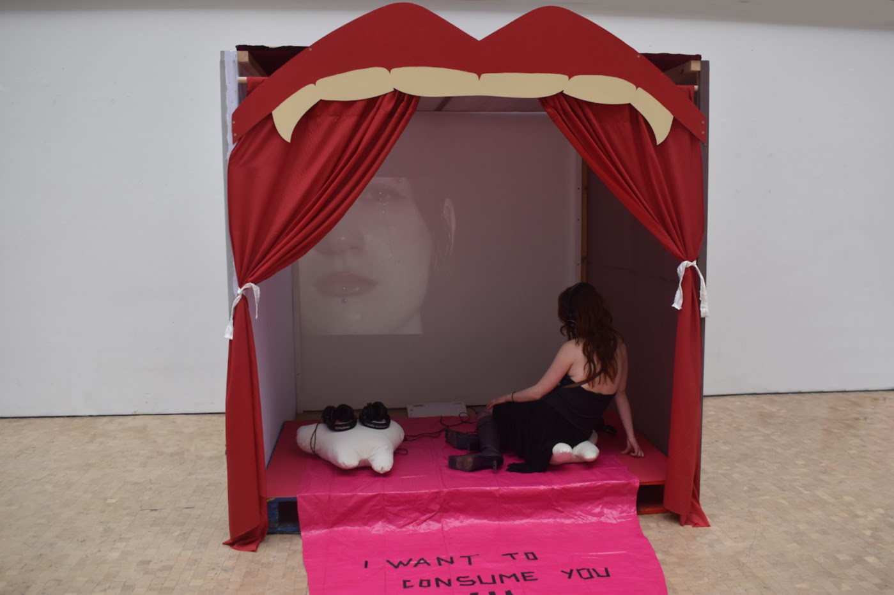
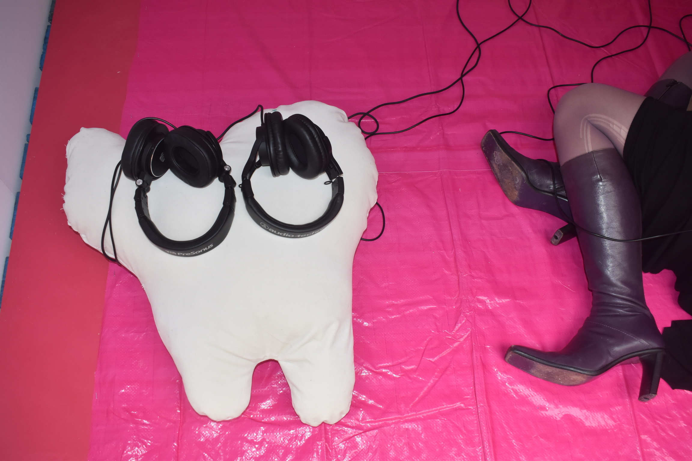
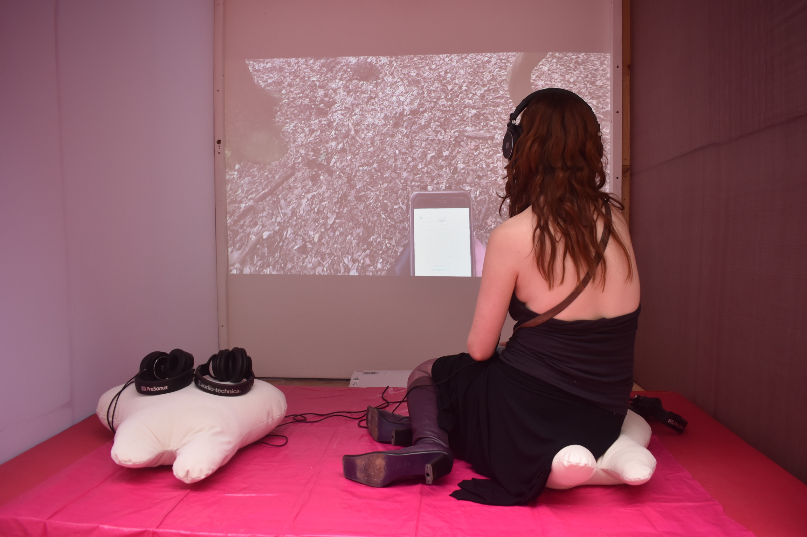
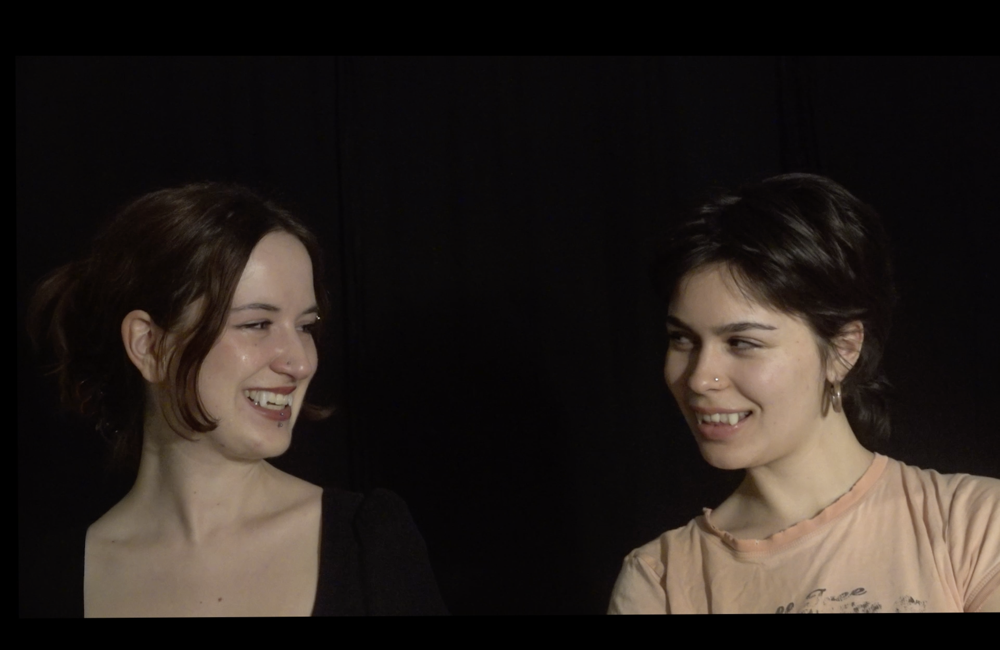
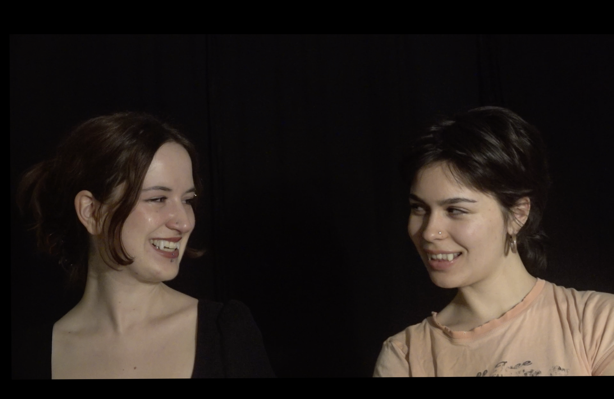
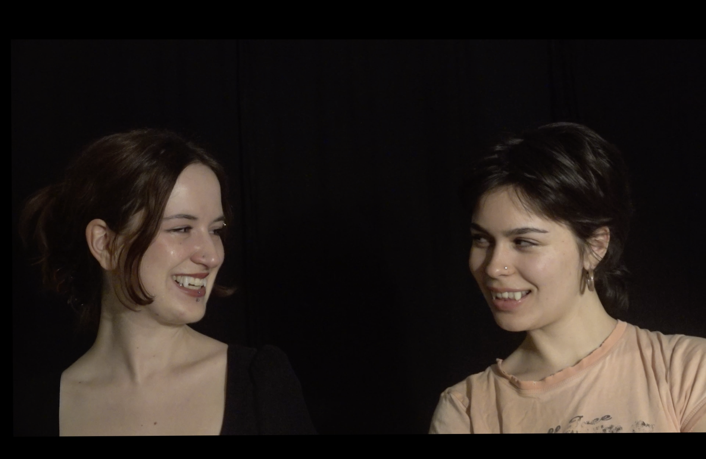

Where do you go at Night?




 


This collaborative film and installation between myself and Jade Zaheer investigates re-connecting with animal instincts and blurring the boundaries of self in response to Rachel Yoder's question in Nightbitch: ''to what identities to women turn to when those available to them fail?'. Failure to be human and failure to be singular is part of exploration of collaborative practice not only as method but as a mode to approach multiplicity.